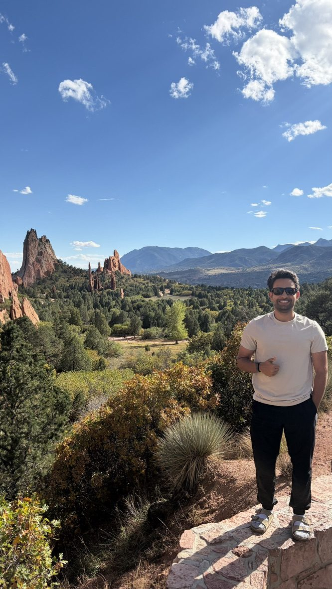
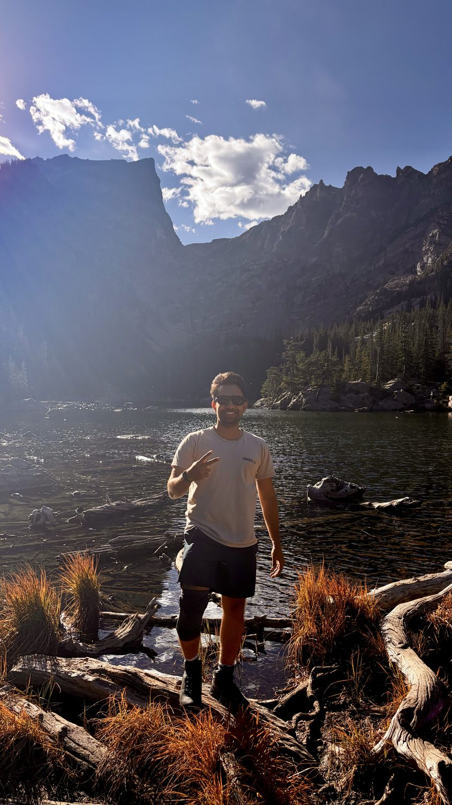
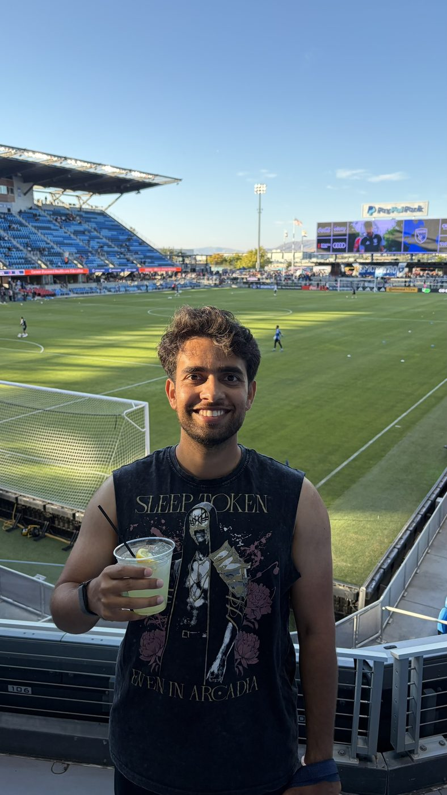

I'll try any new food once.
Good food is part of every trip and most weekends. If you know a place in or around San Jose that I should try, I'd love to hear about it.
Send me a recommendationOff the clock
I'm an outdoorsy person. I hike, play soccer and volleyball, watch a lot of football, and try almost any restaurant someone recommends. I moved to the US in August 2022 and I live in San Jose.
Trails
Red rock spires and alpine lakes in Colorado, golden hills around the Bay Area, and the Pacific coast at sunset are some of my favorite places to be. A good trail clears my head faster than anything else.



Soccer
Soccer is my favorite sport and FC Barcelona is my club. When I'm not on a soccer field, I'm on a volleyball court.
Good food is part of every trip and most weekends. If you know a place in or around San Jose that I should try, I'd love to hear about it.
Send me a recommendationPhoto wall
Tap any photo to see it larger. More are coming.
I'm always up for all three.